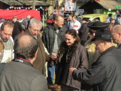

A hagyományok tisztelője

Mi tagadás, bevalljuk: a lányokkal kibeszéltük Fazekas Sándor vidékfejlesztési minisztert. A televízióból mindenki ismerte, a magyar vidékért és az agrárium felemelkedéséért végzett kitartó munkáját sohasem titkolta a nagyközönség előtt. Arról azonban már sokkal kevesebben hallottak, hogy szűkebb hazája, Karcag ötször választotta meg polgármesterének, három parlamenti ciklusban is a terület országgyűlési …